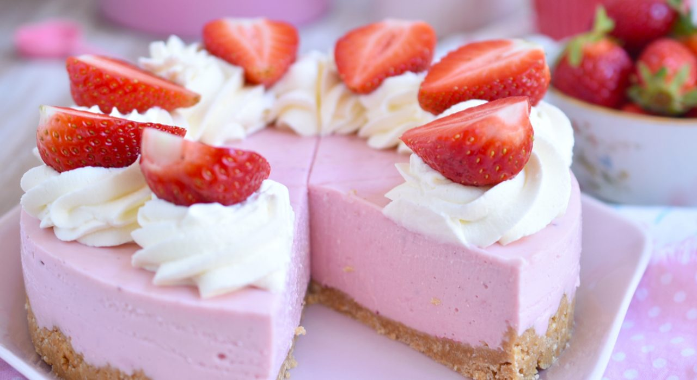

Receta fácil de cheesecake de fresas, sin horno
Si eres del equipo al que le gustan los postres fresquitos y frutales, y amas las cheesecakes tanto como yo, este postre te va a flechar de amor a primera probada
Si eres del equipo al que le gustan los postres fresquitos y frutales, y amas las cheesecakes tanto como yo, este postre te va a flechar de amor a primera probada
Para mí, no hay una demostración de amor más bonita que la de preparar algo rico para alguien que quiero. Pensar en qué hacer, prepararlo, decorarlo y envolverlo. Y luego, saber que esa persona está disfrutando algo que hice con mis manos es la forma más sencilla y linda
Saben que de repente conoces algo que te cambia la vida?, algo que pensaste que jamás te iba a gustar o que no te daba curiosidad, y de repente lo pruebas y es como "cómo pude vivir tanto tiempo sin esto?". Pues bueno, la crema de galletas o Cookie Butter
Lo primero que me enganchó al mundo de la pastelería no fue el hecho de que amaba los dulces (que los amo, eso está claro, verdad?). En realidad lo primero que me enganchó fue lo bien que me sentía mientras horneaba, preparaba un dulce o lo decoraba.